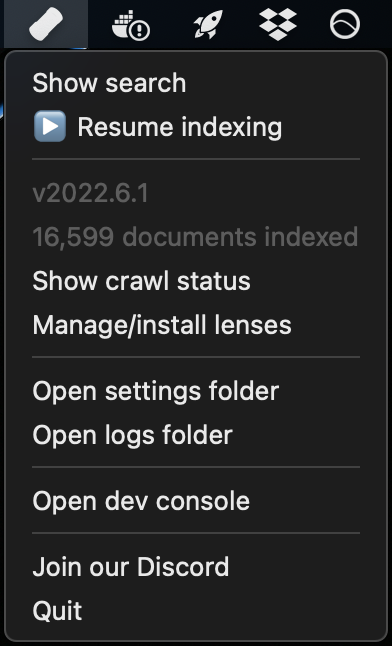
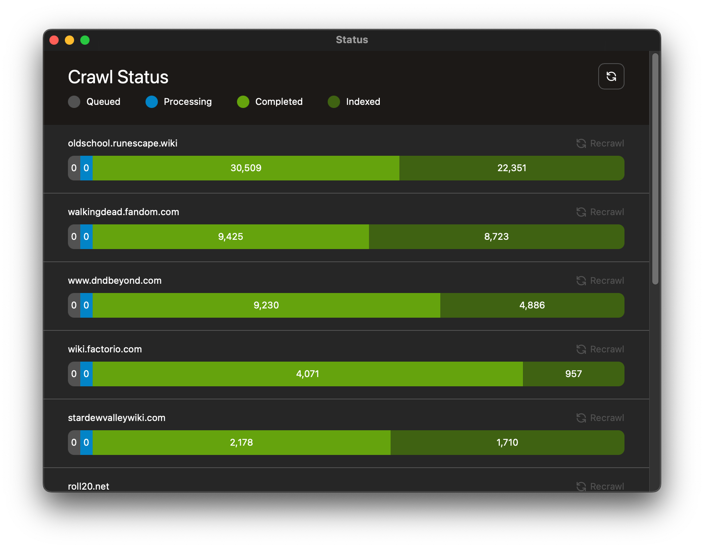
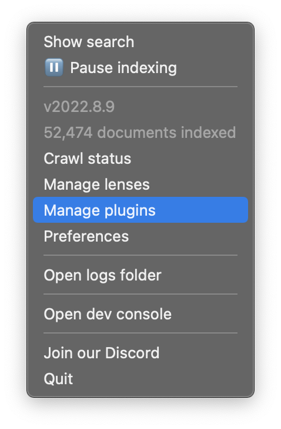
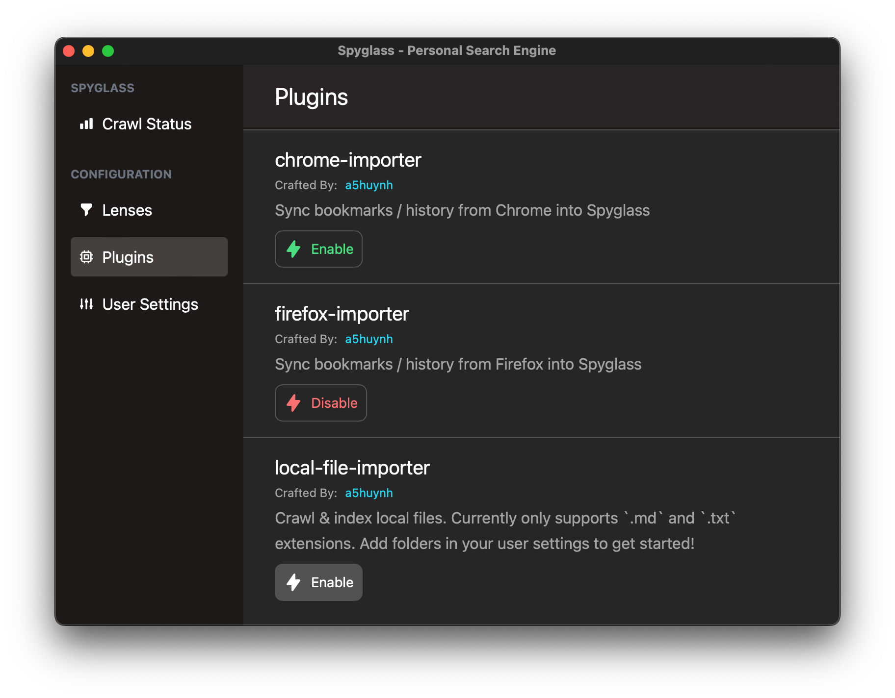
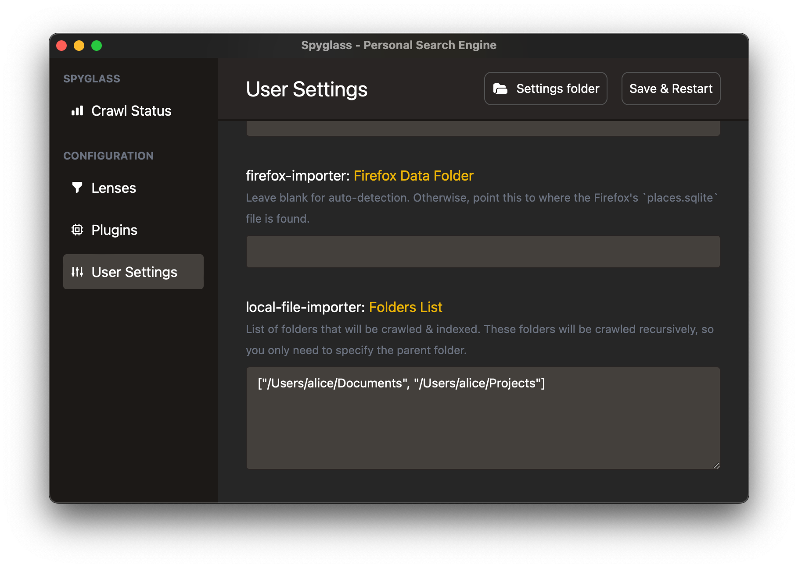
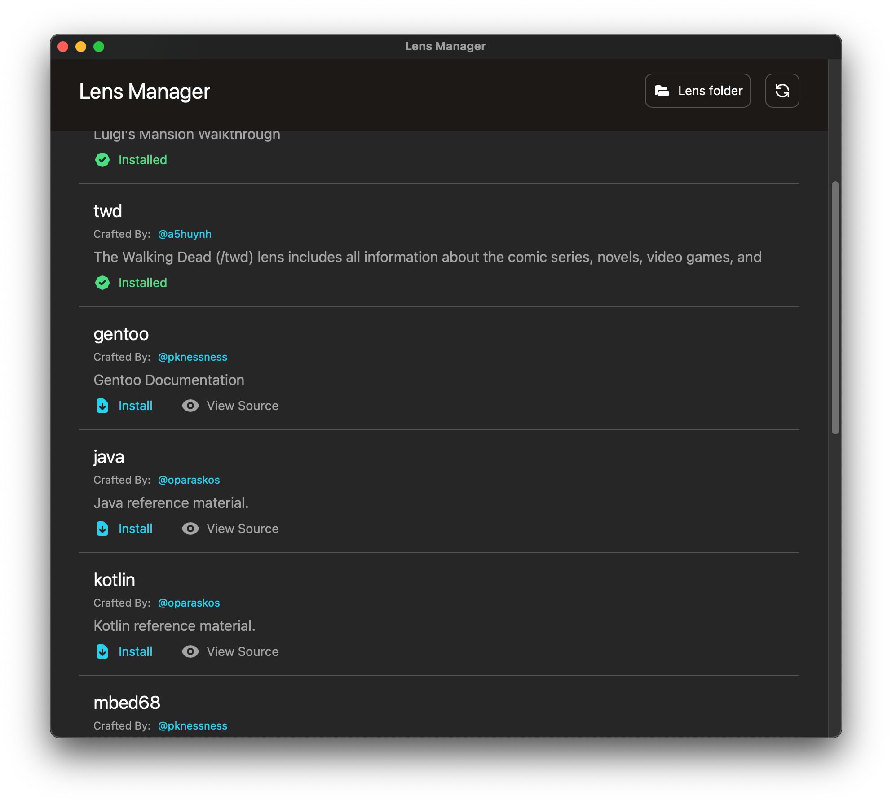

Introduction

Spyglass indexes what you want, exposing it to you in a simple & fast interface
Spyglass is a solution to address the following common issues when searching the web.
- Do you add terms such as
redditorwikito your searches to narrow it down? - Do you skip over a full-page of ads before getting to your actual search results?
- Do you scroll past dozens of SEO spam pages to find the recipe/review/blog post you were looking for?
- Do you get frustrated with overzealous autocorrect on your search terms?
Installation
⚠️ Spyglass is very much in its early stages, but it’s in a place where it's functional and can be used to replace basic searches
Spyglass is supported on all platforms. The latest release can always be found here.
| Platform | Download Link |
|---|---|
| Linux (AppImage)* | spyglass_22.11.1_amd64.AppImage |
| macOS | Spyglass_22.11.1_x64.dmg |
| Windows | Spyglass_22.11.1_x64_en-US.msi |
- : Linux builds are built & tested on the latest version of Ubuntu. If you're using a different distro or window manager there may be some differences. Please open an issue if you find something completely broken.
Building from Source
Dependencies
Make sure you have setup the prerequisites for tauri. That should get you most of the way towards the requirements for building spyglass.
Spyglass uses TailwindCSS for styling within the application. Make sure you have NPM installed before starting the build.
A quick check-list of things you should have installed before continuing. At the time of writing, you should be able to see similar versions below:
$> rustc -V
rustc 1.61.0 (fe5b13d68 2022-05-18)
$> cargo --version
cargo 1.61.0 (a028ae42f 2022-04-29)
$> npm --version
8.10.0
NOTE:
$>represents your command line prompt.
Finally, let's setup the application dependencies. If you're running on Linux, run this first for some linux specific system dependencies.
$> make setup-dev-linux
And finally run these commands to setup the server/client dependencies.
$> make setup-dev
Building the Application
Run the following to build the application:
$> make build-release
This will kick off a release build for your platform. Depending on your OS, this
will produce a dmg (macos), msi (windows) or appimage (linux) file.
Development Builds
When running in development, it is best to have the spyglass client & backend running in two different terminal tabs/windows. Both will have their own logs that you'll need to watch.
First, build & run the backend service:
$> cargo run -p spyglass
Second, build & run the client
$> cargo tauri dev
If you're actively working on the theming of the application itself, it's best
to have tailwind in watch mode so that the CSS can be continually checked &
built.
$> npx tailwindcss -i ./public/input.css -o ./public/main.css --watch
If you're working on the default plugins, setup the PLUGINS_DEV_FOLDER variable
inside the Makefile to point to the spyglass dev/debug data folder. This will be
one of the following:
| Platform | Path |
|---|---|
| linux | /home/<username>/.local/share/spyglass-dev/ |
| macOS | /Users/<username>/Library/Application Support/com.athlabs.spyglass-dev/ |
| windows | C:\Users\<username>\AppData\Roaming\spyglass-dev\data |
To deploy plugin changes, run the following and restart your dev spyglass instance to reload the plugins
$> make build-plugins-dev
Launching & Using Spyglass
After you've successfully installed Spyglass, launch the application from where you normally find newly installed applications.
If the app has been successfully launched, you'll see a little menubar icon like the following:

On Windows, this will appear as a colorful spyglass icon in your system tray (bottom right).
On Ubuntu Linux, this will appear as a color spyglass icon in the top right.
Opening the search bar
Once launched, press Cmd (Ctrl) + Shift + / to open Spyglass. This hotkey
can be configured in your settings.
If for some reason this hotkey is not working, you can launch the search bar directly
with the Show search menu item.
Finding & Applying a lens
Queries prefixed with / will search through your installed lenses. Select the lens
you want to search through and hit Enter to apply it to your current search.
Selecting and Opening a Result
As you're searching, use the arrow keys to select the result you want and hitEnter
to open the link in your default browser.
Viewing crawler status & forcing a recrawl
Open the crawl status window by going into the system tray menu and clicking on
the Show crawl status option. This will open a window like below:

The crawl status window will show the status of all URLs that has been seen by the system, group by their domain.
Note: The status does not auto-update, click on the refresh icon in the right corner to refresh the status.
- Queued - Indicates a URL that is waiting to be crawled.
- Processing - Currently being crawled.
- Completed - Indicates a URL that has been crawled.
- Indexed - Indicates a URL that has ultimately been indexed.
Completed vs Indexed
Often times the number of indexed documents may not match the number of completed. This does not necessarily mean something has gone wrong. Completed indicates unique URLs that have been crawled, but this does not always mean that it will be indexed.
For example, https://en.wikipedia.org & https://en.wikipedia.org/wiki/Main_Page would refer to two separate URLs but ultimately only represent a single indexed document since they point to the same place.
Indexing local files
NOTE: Currently local file indexing is limited to
.mdand.txtfiles. More file types will be added as we stabilize this feature.
Enabling the local indexer plugin
The local file index plugin is disabled by default. Navigate to the "Manage Plugins" item in the menubar dropdown to open up the plugin management interface.

Click on the "Enable" button under the "local-file-indexer" plugin to enable local file indexing.

Adding folders to index
The file indexer plugin will recursively walk through a folder & its' children to find files. Because of this, you'll only need to add the parent folder of what you want to index.
For example, if you want to index all the files under /Users/alice/Documents/projects
and /Users/alice/Documents/Obsidian Notes, you only need to add /Users/alice/Documents.
To add folders, navigate to the "User Settings" and scroll down to the local-file-importer: Folders List
setting. This takes an array of folder strings as seen below:

The list will be validated and an error will pop up if the folder does not exist.
Indexing bookmarks
NOTE: Currently bookmark syncing only works w/ Chrome and Firefox. If you'd like us to support other services, please let us know!
Enabling the plugin for your browser
The browser plugins are disabled by default. Navigate to the "Manage Plugins" item in the menubar dropdown to open up the plugin management interface.
Click on the "Enable" button under the "chrome-importer" or "firefox-impoter" plugin to enable bookmark syncing.
Indexing website topics/sites
There are two ways to start indexing websites you're interested in.
- First is to install one from our list of community built lenses

- Building your own lens, which are simple text files which tell the application what to crawl & index. For example, here is a lens for recipes that I like to search for on a routine basis:
#![allow(unused)] fn main() { ( version: "1", // Be proud of your creation :). Maybe soon we can share these ;) author: "Andrew Huynh", name: "recipes", description: Some(r#" A curated collection of websites with useful, high-quality recipes. "#), // Set to false if you want to disable this lens is_enabled: true, domains: [ // Major sites that often have really good recipes "www.seriouseats.com", "cooking.nytimes.com", ... // Specific cuisines/sites that I've found randomly w/ high-quality recipes "www.hungryhuy.com", "www.vickypham.com", ], urls: [ // URLs are considered prefixed, i.e. anything that starts w/ the following // will be matched and crawled. // // https://www.reddit.com/r/recipes/ -> matches // https://www.reddit.com/r/recipes_not/ -> does not match, notice the end slash. "https://www.reddit.com/r/recipes/", ], // Rules allow you to refine how the crawler determine whether it should crawl // a URL or not. rules: [ // SkipURL is a simple regex (similar to ones in robots.txt) that when matches // a URL will skip crawling it. // // For example, below I'm skipping over any URLs that have the word "broccoli" // in the path, despite the benefits to my health. SkipURL("https://www.seriouseats.com/*broccoli*"), // Limits the depth of a URL to a certain depth. // For example: // - LimitURLDepth("https://example.com/", 1) will limit it to https://example.com/<path 1> // - LimitURLDepth("https://example.com/", 2) will limit it to https://example.com/<path 1>/<path 2> // - etc. // In this case, we're limiting to only https://www.reddit.com/r/recipes/<post> so we don't // index too many comments/etc. from reddit. LimitURLDepth("https://www.reddit.com/r/recipes", 1), ] ) }
Lenses
Spyglass expands on the ideas outlined in this paper by the Brave Search Team to allow users to define what should / should not be crawled and indexed for topics they're interested in.
Community Lenses
Spyglass has a small community that has been building lenses for different topics. You can check out the ones available to download by clicking on "Manage/install lenses" from the menubar icon to open up the "Lens Manager" as seen below.
Community lenses are downloaded from spyglass-search/lens-box.
From here, you can one-click install lenses and the crawler will happily go out and start indexing.
Building your own lens
You can also create your own lenses. Once created you can drop these in your "lens" folder, which can be opened through the lens manager window.
Here are some examples that I've been personally using:
Curated recipe searching
Interested in cooking & recipes? Add a recipe lens which will go index a
curated set of websites with high quality recipes.
(
version: "1",
// Be proud of your creation :). Maybe soon we can share these ;)
author: "Andrew Huynh",
name: "recipes",
description: Some(r#"
A curated collection of websites with useful, high-quality recipes.
"#),
// Set to false if you want to disable this lens
is_enabled: true,
domains: [
// Major sites that often have really good recipes
"www.seriouseats.com",
"cooking.nytimes.com",
...
// Specific cuisines/sites that I've found randomly w/ high-quality recipes
"www.hungryhuy.com",
"www.vickypham.com",
],
urls: [
// URLs are considered prefixed, i.e. anything that starts w/ the following
// will be matched and crawled.
//
// https://www.reddit.com/r/recipes/ -> matches
// https://www.reddit.com/r/recipes_not/ -> does not match, notice the end slash.
"https://www.reddit.com/r/recipes/",
],
// Rules allow you to refine how the crawler determine whether it should crawl
// a URL or not.
rules: [
// SkipURL is a simple regex (similar to ones in robots.txt) that when matches
// a URL will skip crawling it.
//
// For example, below I'm skipping over any URLs that have the word "broccoli"
// in the path, despite the benefits to my health.
SkipURL("https://www.seriouseats.com/*broccoli*"),
// Limits the depth of a URL to a certain depth.
// For example:
// - LimitURLDepth("https://example.com/", 1) will limit it to https://example.com/<path 1>
// - LimitURLDepth("https://example.com/", 2) will limit it to https://example.com/<path 1>/<path 2>
// - etc.
// In this case, we're limiting to only https://www.reddit.com/r/recipes/<post> so we don't
// index too many comments/etc. from reddit.
LimitURLDepth("https://www.reddit.com/r/recipes", 1),
]
)
Narrowing down by a specific topic
Interested in the Rust programming language? Add the rustlang lens which will
index the Rust book, rust docs, crate.io, and other sites that are related to the
programming language and not the Rust game / The Rust Belt / oxidation / etc.
(
version: "1",
author: "Andrew Huynh",
name: "rustlang",
description: Some("Rustlang targeted websites"),
is_enabled: true,
domains: [
// Support for wildcards in domain names
"*.rust-lang.org",
"docs.rs",
"rustconf.com",
"crates.io",
"this-week-in-rust.org",
...
],
urls: [
// A `$` at the end will *only* index that particular URL and will not go
// deeper into the site.
"https://www.reddit.com/r/rust/$",
"https://www.reddit.com/r/rust_gamedev/$",
],
rules: []
)
Settings
The settings.ron file can be found by "Show Settings folder". If there is no
file found in their directory on startup, a default one will be created.
(
// The max number of pages to index per domain
domain_crawl_limit: Finite(1000),
// The max number of crawlers per domain
inflight_domain_limit: Finite(2),
// The max number of crawlers in total
inflight_crawl_limit: Finite(10),
// Not used... yet!
run_wizard: false,
// Not used... yet!
allow_list: [],
// Domains to completely ignore, regardless of the lenses you have installed.
block_list: [
"web.archive.org",
"w3schools.com"
],
// Shortcut to launch the search bar
shortcut: "CmdOrCtrl+Shift+/",
// Where to store your index and index metadata
// The exact default location is dependent on your OS
//
// - NOTE: If you're updating this for Windows, the path needs to use double backward slashes
// like so: "E:\\spyglass\\data"
// - Linux & macOS uses paths like below
//
data_directory: "/Users/<username>/Library/Application Support/com.athlabs.spyglass",
// By default, Spyglass will only crawl things as specified in your lenses. If you want
// to follow links without regard to those rules, set this to true.
crawl_external_links: false,
// Disables sending any telemetry. Currently the only telemetry is for bug/error reporting.
disable_telemetry: false,
// Disables launching the application when your computer first boots up.
disable_autolaunch: false,
// Port that the search daemon runs on. Change this if you have another service
// already running at this port number.
port: 4664
)
Updating the Shortcut
To update the shortcut combine the following modifiers w/ an appropriate keycode combining each key with a "+".
Supported Modifiers:
- "Option" / "Alt"
- "Control" / "Ctrl"
- "Command" / "Cmd" / "Super"
- "Shift"
- "CmdOrCtrl"
Examples:
- "CmdOrCtrl+/" => Launches the app w/
CmdorCtrl+/ - "CmdOrCtrl+Shift+/" => Launches the app w/
CmdorCtrl+Shift+/ - "Shift+4" => Launches the app w/
Shift+4
NOTE: Shortcuts are allowed to have any number of modifiers but only a single key.
For example, Shift+4 will work but not Shift+4+2